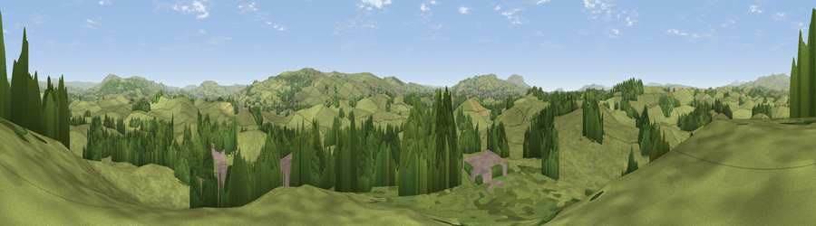

White Croft Hill
#21291 in England · top 43% of its area beats it · near East MartonThe view, rendered

A 360° render of this exact spot computed from the terrain model, tree cover and land cover — summer colours, afternoon light, calibrated against photographs of famous viewpoints. Real trees, hedges and buildings will differ in detail.
The panorama
Grey silhouette: terrain skyline in each direction (720 bearings, Earth curvature and refraction included). Dashed green: skyline with trees (+15 m) and buildings (+8 m) as obstacles. Blue strip: how far the ground is visible on each bearing.
Where the view opens
Wedge length = distance to the farthest visible ground on that bearing (vegetation-aware). Rings at 10, 25 and 50 km.
What fills the view
77% grassland · 19% woodland · 3% built-up ·
Angular shares of the visible panorama (visual magnitude), not map area. Landscape diversity 0.29 (0–1 Shannon).
Key numbers
More beautiful places nearby
The staircase of upgrades: each row has a higher view potential than everything closer. Driving times are estimates from straight-line distance, calibrated against real road routing — check an actual route before setting out.
| Place | Direction | Drive | Score |
|---|---|---|---|
| Mickleber Hill | NE · 3 km | ~7 min | 52.8 |
| Flambers Hill | WNW · 3 km | ~8 min | 61.4 |
| Viewpoint near Lothersdale | SE · 5 km | ~12 min | 70.5 |
| Sharp Haw | NE · 7 km | ~14 min | 72.7 |
| Viewpoint near Embsay | ENE · 9 km | ~18 min | 74.5 |
| Cracoe Fell | NE · 12 km | ~22 min | 75.1 |
| Viewpoint near Barley | SW · 14 km | ~25 min | 76.3 |
| Pendle Hill | SW · 14 km | ~25 min | 76.5 |
53.95568, -2.14435 · source: osm peak · position refined by local search. Computed location — check access rights before visiting.